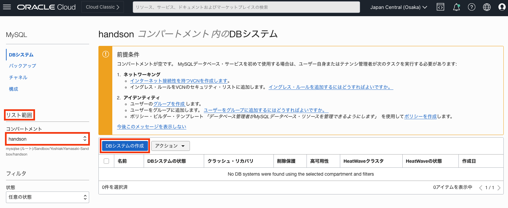
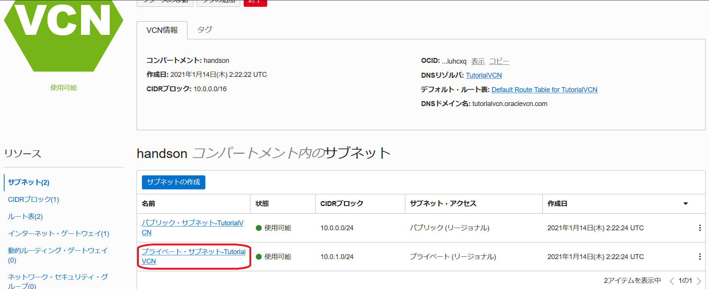
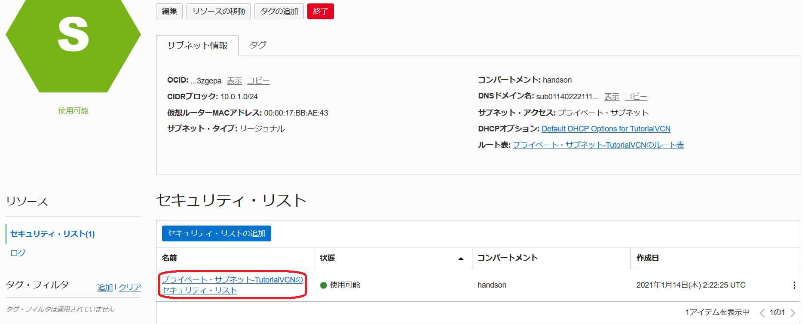

Oracle Cloud Infrastructure では、MySQL Database Service(MDS)が利用できます。MDSはAlways Freeの対象ではないため、使用するためにはクレジットが必要ですが、トライアルアカウント作成時に付与されるクレジットでも使用可能です。
このチュートリアルでは、コンソール画面から高可用性構成を有効化したMDSを作成し、コンピュート・インスタンスにMySQLクライアントをインストールして、MDSの高可用性動作を確認する手順を説明します。
所要時間 : 約30分 (約15分の待ち時間含む)
前提条件 :
- Oracle Cloud Infrastructure の環境(無料トライアルでも可) と、管理権限を持つユーザーアカウントがあること
- OCIコンソールにアクセスして基本を理解する - Oracle Cloud Infrastructureを使ってみよう(その1) を完了していること
- クラウドに仮想ネットワーク(VCN)を作る - Oracle Cloud Infrastructureを使ってみよう(その2) を完了していること
- インスタンスを作成する - Oracle Cloud Infrastructureを使ってみよう(その3) を完了していること
注意 : チュートリアル内の画面ショットについては Oracle Cloud Infrastructure の現在のコンソール画面と異なっている場合があります。
また、このチュートリアルでコードブロックに掲載しているコードは1行で長いコードを掲載している部分もあります。その部分では、右側にスクロールしてコード全文を確認して下さい。
(チュートリアルを実践する時は、一旦テキストエディタ等にコピー＆ペーストして内容確認＆編集することを推奨します)
目次：
- 1. はじめに
- 2. 本チュートリアルで作成する構成の構成図
- 3. 高可用性構成を有効化したMDSの作成
- 4. セキュリティリストの修正(イングレス・ルールの追加)
- 5. MySQLクライアント、MySQL Shellのインストール
- 6. 作成したMDSで高可用性が実現できることを確認
1. はじめに
本チュートリアルでは、MySQL Database Service(MDS)の基本的な説明や、MDSの基本的な作成方法の説明は割愛しています。これらについては、クラウドでMySQL Databaseを使う - Oracle Cloud Infrastructureを使ってみよう(その9) を参照して下さい。
2. 本チュートリアルで作成する構成の構成図
本チュートリアルでは、以下の構成を作成します。
3. 高可用性構成を有効化したMDSの作成
MDSを作成します。本チュートリアルではデフォルトの構成でMDSを作成していますが、シェイプやストレージサイズ、バックアップ設定などをカスタマイズすることも可能です。
- コンソールメニューから データベース → MySQL → DBシステム を選択します。

- DBシステムの作成 ボタンを押します。この際、左下の リスト範囲 でリソースを作成したいコンパートメントを選択していることを確認して下さい。ここでは「handson」コンパートメントを使用しています。

-
立ち上がった DBシステムの作成 ウィンドウで「Development or testing(開発もしくはテスト)」を選択した後で、以下の項目を入力します。
- 名前 - 任意の名前を入力します。ここでは「TestHA」と入力しています。
- 説明 - このMDSの説明を入力します。ここでは「ハンズオン用」と入力しています。(入力は任意です)
- 「スタンドアロン」、「高可用性」、「HeatWave」 - MDSを高可用性構成で構成するため、「高可用性」を選択します。「高可用性」を選択した場合、グループ・レプリケーションによる高可用性構成が組まれるため、内部的には3台のMDSが構成されます。

- ユーザー名 - MySQL Databaseの管理者ユーザーのユーザー名を指定します。ここでは「root」と入力しています。(セキュリティの観点からは任意のユーザー名を指定することを推奨します)
- パスワード - MySQL Databaseの管理者ユーザーのパスワードを指定します。パスワードは8文字から32文字までの長さで、大文字、小文字、数字および特殊文字をそれぞれ1つ以上含める必要があります。
- パスワードの確認 - パスワードを再入力します。
- ネットワーキングの構成 - 本チュートリアルでは、「TutorialVCN」、「プライベート・サブネット-TutorialVCN（リージョナル）」を使用します。
- ホスト名 - 任意の名前を入力します。ここでは「TestHA」と入力しています。
※ページ下部にある「拡張オプションの表示」をクリック後、「ネットワーキング」タブをクリックして入力欄を表示します。
-
MDSが作成中になるのでしばらく待ちます。概ね15分程度で作成が完了しステータスがアクティブに変わります。「高可用性」部分を確認すると「高可用性: 有効」となっていることから、このMDSで高可用性が有効になっていることが確認できます。また、「DBシステム構成」部分を確認すると、先程プロビジョニングしたリソースの3倍の値が表示されています。これは、グループ・レプリケーション機能により内部的に3台のMDSが構成されているためです。

- ページ左下の リソース → エンドポイント をクリックして、ホスト名、IPアドレスを確認しておきます。
4. セキュリティリストの修正(イングレス・ルールの追加)
このチュートリアルで作成したMDSと通信するためには、TCP/IPによる3306ポートに対する通信を許可する必要があります。そのため、セキュリティリストのイングレス・ルールに設定を追加します。
- コンソールメニューから ネットワーキング → 仮想クラウドネットワーク を選択し、作成済みのVCNを選択します。本チュートリアルではTutorialVCN です。またこれ以降はVCNが TutorialVCN である前提で説明を記述しています。


- プライベート・サブネット-TutorialVCN をクリックします。

- プライベート・サブネット-TutorialVCNのセキュリティ・リスト をクリックします。

- イングレス・ルールの追加 をクリックします。

-
立ち上がった イングレス・ルールの追加 ウィンドウで、以下の項目を入力し イングレス・ルールの追加 ボタンを押します。
- ソースCIDR - 「10.0.0.0/16」と入力します。
- 宛先ポート範囲 - 「3306」と入力します。
- 説明 - 「MySQL」と入力します。(入力は任意です)

- 3306ポートに対するイングレス・ルールが追加されたことを確認します。

5. MySQLクライアント、MySQL Shellのインストール
コンピュート・インスタンスにMySQLクライアントとMySQL Shellをインストールします。MySQLチームが提供しているyumの公式リポジトリをセットアップした後で、yumでインストールします。
-
インスタンスを作成する - Oracle Cloud Infrastructureを使ってみよう(その3)で作成したコンピュート・インスタンスに接続し、以下のコマンドを実行します。これにより、MySQLチームが提供しているyumの公式リポジトリがセットアップされます。
sudo yum install https://dev.mysql.com/get/mysql80-community-release-el8-4.noarch.rpm -
RHEL8系のOSの場合、デフォルトで有効になっているMySQLモジュールを無効化する必要があるため、以下のコマンドを実行します。詳細な説明はこちらのドキュメントを参照して下さい。
sudo yum module disable mysql -
以下コマンドを実行し、MySQLクライアントをインストールします。
sudo yum install mysql-community-client -
以下コマンドを実行し、MySQL Shellをインストールします。
sudo yum install mysql-shell
6. 作成したMDSで高可用性が実現できることを確認
作成したMDSの状態を確認し、グループ・レプリケーションが構成されていることを確認します。その後、データを更新しながらスイッチオーバーを発生させることで、短時間でプライマリサーバーが切り替わることを確認します。
(実際に障害が発生した場合は、スイッチオーバーではなくフェイルオーバーが発生します。しかし、フェイルオーバーを意図的に発生させることは難しいため、ここではスイッチオーバーを使ってプライマリサーバーの切り替えを確認します)
-
mysqlコマンドラインクライアントを使ってMDSへ接続します。ユーザー名はMDSの管理者ユーザー名に、ホスト名は確認したホスト名に置き換えて下さい。
(“-u”オプションでユーザー名を、”-h”オプションでホスト名を指定します)実行コマンド例(コピー＆ペースト用)
mysql -u root -p -h TestHA.sub01311142371.tutorialvcn.oraclevcn.com実行例
[opc@testvm1 ~]$ mysql -u root -p -h TestHA.sub01311142371.tutorialvcn.oraclevcn.com Enter password: Welcome to the MySQL monitor. Commands end with ; or \g. Your MySQL connection id is 38 Server version: 8.0.32-cloud MySQL Enterprise - Cloud Copyright (c) 2000, 2023, Oracle and/or its affiliates. Oracle is a registered trademark of Oracle Corporation and/or its affiliates. Other names may be trademarks of their respective owners. Type 'help;' or '\h' for help. Type '\c' to clear the current input statement. mysql> -
performance_schema.replication_group_membersテーブルをSELECTしてグループ・レプリケーションが構成されていることを確認します。3台のMDSでグループ・レプリケーションが構成されているため、結果は3行出力されます。その中で、MEMBER_ROLE列がPRIMARYになっているメンバーが、今プライマリになっているMDSです。この後の確認のために、プライマリのMDSのMEMBER_HOSTをメモしておきます。この例では、”battlz9jzxwb28dg”をメモしておきます。
実行コマンド(コピー＆ペースト用)
SELECT MEMBER_ID, MEMBER_HOST, MEMBER_STATE, MEMBER_ROLE FROM performance_schema.replication_group_members;実行例
mysql> SELECT MEMBER_ID, MEMBER_HOST, MEMBER_STATE, MEMBER_ROLE -> FROM performance_schema.replication_group_members; +--------------------------------------+------------------+--------------+-------------+ | MEMBER_ID | MEMBER_HOST | MEMBER_STATE | MEMBER_ROLE | +--------------------------------------+------------------+--------------+-------------+ | 434e1837-a7bf-11ed-895a-020017009e6c | msv4fwl6o2e28az2 | ONLINE | SECONDARY | | 4362771b-a7bf-11ed-b99b-02001701ef69 | xodvzvdletbd4kcx | ONLINE | SECONDARY | | ffb0f26f-a7be-11ed-851b-0200170045b2 | battlz9jzxwb28dg | ONLINE | PRIMARY | +--------------------------------------+------------------+--------------+-------------+ 3 rows in set (0.00 sec) -
スイッチオーバー時の動作を確認するためのテストテーブルを作成します。そのテーブルに、現在プライマリであるMEMBER_HOSTの情報と現在の時刻をINSERTし、INSERTしたデータをSELECTして確認します。その後、mysqlコマンドラインクライアントを終了します。
実行コマンド(コピー＆ペースト用)
CREATE DATABASE test;CREATE TABLE test.test( id int AUTO_INCREMENT, PRI_MEMBER_HOST CHAR(20), INSERT_TIME time, PRIMARY KEY(id) );INSERT INTO test.test(PRI_MEMBER_HOST, INSERT_TIME) SELECT MEMBER_HOST, CURTIME() FROM performance_schema.replication_group_members WHERE MEMBER_ROLE='PRIMARY';SELECT * FROM test.test;実行例
mysql> CREATE DATABASE test; Query OK, 1 row affected (0.01 sec) mysql> CREATE TABLE test.test( -> id int AUTO_INCREMENT, -> PRI_MEMBER_HOST CHAR(20), -> INSERT_TIME time, -> PRIMARY KEY(id)); Query OK, 0 rows affected (0.00 sec) mysql> INSERT INTO test.test(PRI_MEMBER_HOST, INSERT_TIME) -> SELECT MEMBER_HOST, CURTIME() -> FROM performance_schema.replication_group_members -> WHERE MEMBER_ROLE='PRIMARY'; Query OK, 1 row affected (0.01 sec) Records: 1 Duplicates: 0 Warnings: 0 mysql> SELECT * FROM test.test; +----+------------------+-------------+ | id | PRI_MEMBER_HOST | INSERT_TIME | +----+------------------+-------------+ | 1 | battlz9jzxwb28dg | 15:37:31 | +----+------------------+-------------+ 1 row in set (0.00 sec) mysql> exit Bye [opc@testvm1 ~]$ -
以下のシェルスクリプトをtest.shという名前で作成し、test.shを実行します。このスクリプトでは、1秒毎にテストテーブルにデータをINSERTする処理を無限ループで実行します。ユーザー名とパスワードはMDSの管理者ユーザー名/パスワードに、ホスト名は確認したホスト名に置き換えて下さい。なお、スクリプト実行時にパスワードをコマンドラインで指定していることに対する警告が発生しますが、ここでは無視して大丈夫です。
(“-p”オプションでパスワードを指定しています。この例では、”MySQL_8.0”というパスワードを指定しています)test.shファイル
#!/bin/bash while true; do mysql -u root -pMySQL_8.0 -h TestHA.sub01311142371.tutorialvcn.oraclevcn.com -e "INSERT INTO test.test(PRI_MEMBER_HOST, INSERT_TIME) SELECT MEMBER_HOST, CURTIME() FROM performance_schema.replication_group_members WHERE MEMBER_ROLE='PRIMARY';" sleep 1 done
実行コマンド(コピー＆ペースト用)chmod 744 ./test.sh ./test.shtest.shの実行例
[opc@testvm1 ~]$ chmod 744 ./test.sh [opc@testvm1 ~]$ ./test.sh mysql: [Warning] Using a password on the command line interface can be insecure. mysql: [Warning] Using a password on the command line interface can be insecure. mysql: [Warning] Using a password on the command line interface can be insecure. <略> -
コンソールからスイッチオーバーを発生させます。他のアクション → スイッチオーバー をクリックし、その後表示されたウインドウで現在セカンダリになっているFD(もしくはAD)を選択し、スイッチオーバー をクリックします。この例では、プライマリがFD1の状態から、FD2をプライマリに切り替える操作をしています。スイッチオーバーを実行すると、コンソール上でステータスが数分間「更新中」になり、その後ステータスが「アクティブ」に戻ります。なお、ステータスがアクティブに戻った時には、「優先フォルト・ドメイン」(もしくは「優先可能性ドメイン」)部分が新しいプライマリに応じて更新されています。

-
「Ctrl+C」を押し、シェルスクリプトtest.shを停止します。その後、MDSに接続します。
実行例
mysql: [Warning] Using a password on the command line interface can be insecure. mysql: [Warning] Using a password on the command line interface can be insecure. mysql: [Warning] Using a password on the command line interface can be insecure. ^C [opc@testvm1 ~]$ mysql -u root -p -h TestHA.sub01311142371.tutorialvcn.oraclevcn.com Enter password: Welcome to the MySQL monitor. Commands end with ; or \g. Your MySQL connection id is 237 Server version: 8.0.32-cloud MySQL Enterprise - Cloud Copyright (c) 2000, 2023, Oracle and/or its affiliates. Oracle is a registered trademark of Oracle Corporation and/or its affiliates. Other names may be trademarks of their respective owners. Type 'help;' or '\h' for help. Type '\c' to clear the current input statement. mysql> -
以下のSQLを実行し、スイッチオーバー時にMDSが使用できなかった時間を確認します。”PRI_MEMBER_HOST=’battlz9jzxwb28dg’“部分は、事前にメモした旧プライマリのMDSのMEMBER_HOSTの値に置き換えて実行して下さい。この例の場合INSERT_TIMEの差分が3秒であるため、スイッチオーバー時にMDSが使用できなかった時間は約2秒であることが分かります。障害発生時に発生するフェイルオーバーの方が、通常状態でプライマリサーバーを切り替えるスイッチオーバーよりも所要時間が長くなる可能性がありますが、プライマリサーバーの切り替え自体はこのように短時間で実現可能です。
実行コマンド例(コピー＆ペースト用)
SELECT * FROM test.test WHERE id IN ( (SELECT MAX(id) FROM test.test WHERE PRI_MEMBER_HOST='battlz9jzxwb28dg'), (SELECT MAX(id) FROM test.test WHERE PRI_MEMBER_HOST='battlz9jzxwb28dg')+1 ) ORDER BY 1 ASC;実行例
mysql> SELECT * -> FROM test.test -> WHERE id IN ((SELECT MAX(id) FROM test.test WHERE PRI_MEMBER_HOST='battlz9jzxwb28dg'), -> (SELECT MAX(id) FROM test.test WHERE PRI_MEMBER_HOST='battlz9jzxwb28dg')+1) -> ORDER BY 1 ASC; +-----+------------------+-------------+ | id | PRI_MEMBER_HOST | INSERT_TIME | +-----+------------------+-------------+ | 104 | battlz9jzxwb28dg | 15:40:09 | | 105 | msv4fwl6o2e28az2 | 15:40:12 | +-----+------------------+-------------+ 2 rows in set (0.00 sec)
これで、この章の作業は終了です。
この章では、TestHA というHA構成のMySQL Database Serviceを作成し、スイッチオーバーによるDB停止時間を確認しました。MDSのHA構成はグループ・レプリケーションにより構成されていますが、グループ・レプリケーションでは障害発生時のデータロスが発生しないアーキテクチャーになっています。また、障害発生時にも自動的にフェイルオーバーが発生するため、ダウンタイムも最小限に抑えられます。高可用性が求められるシステムを構築する際は、HA構成のMDSを使って下さい。
なお、本チュートリアル作成時点(2023年2月時点)でドキュメントで案内されているRTO、RPOは以下の通りです。 (最新の情報はこちらから確認して下さい)

また、HA構成のMDSの制限事項についてはこちらを確認して下さい。2023年2月時点では主に以下の制限事項がありますが、今後改善が計画されています。
- PITR(ポイント・イン・タイム・リストア)を有効化できない
- 「構成」を変更できない
- セカンダリのMDSにはアクセスできない